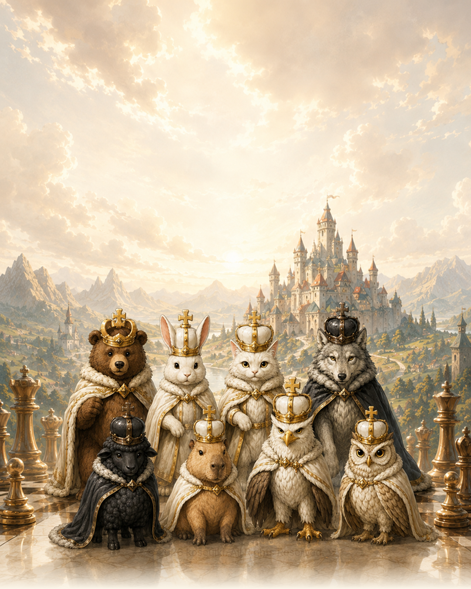
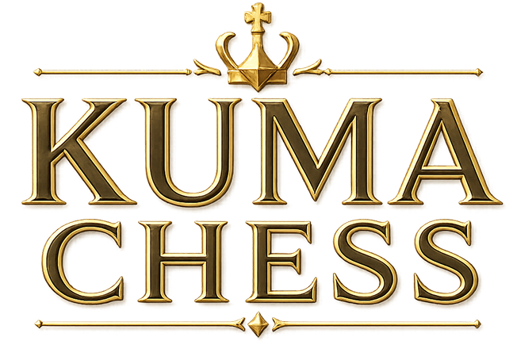
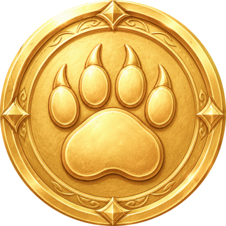

킹
상하좌우와 대각선으로 한 칸씩 이동합니다.
상대 기물에게 공격받는 칸으로는 이동할 수 없습니다.

© 2026 koseulki. All Rights Reserved.


0
왕관을 쓴 동물 기물과 함께 퍼즐, AI 대전, 한 기기에서 즐기는 로컬 2인대전을 플레이하세요.
KUMA CHESS는 체스를 좋아하는 초등학생 아들을 위해 만들기 시작한 게임입니다. 요즘은 각자 스마트폰 화면에 머무는 시간이 길어지고 사람과 사람이 직접 대화하기보다 온라인으로 소통하는 일이 자연스러워졌습니다. 그래서 한 기기를 사이에 두고 마주 앉아 체스를 즐기며, 수를 고민하고 이야기를 나누는 따뜻한 시간을 게임에 담고 싶었습니다.
혼자 즐기는 퍼즐과 AI 대전뿐 아니라 서로의 표정을 보며 함께할 수 있는 2인 플레이를 소중하게 생각합니다. KUMA CHESS가 가족과 친구가 잠시 화면 너머가 아닌 서로를 바라보며 대화하는 작은 계기가 되기를 바랍니다.

게임에 흐르는 모든 배경음악은 KUMA CHESS를 위해 직접 기획하고 만든 오리지널 곡입니다. 체스를 두는 동안 편안하게 머물 수 있는 따뜻한 분위기와 동물 기물들이 살아가는 작은 세계를 음악으로 표현했습니다.
Track 01. 창가의 작은 숲
Track 02. 쿠마의 체스
Track 03. 쿠마 체스
Music created by koseulki for KUMA CHESS.

KUMA CHESS는 제작자의 아이디어와 디자인을 바탕으로, 생성형 AI를 아이디어 구체화, 이미지와 음악 제작, 코드 구현 및 검수의 보조 도구로 활용해 만들었습니다. AI가 제안한 결과를 그대로 사용하는 데 그치지 않고, 게임의 방향을 정하고 결과물을 선택·수정·완성하는 과정은 제작자가 직접 진행했습니다.

체스는 백과 흑이 번갈아 한 번씩 기물을 움직이는 전략 게임입니다.
상대의 킹을 공격하면서 더 이상 피할 방법이 없는 상태, 즉 체크메이트를 만드는 것이 목표입니다.
상대 기물을 모두 잡을 필요는 없습니다. 킹을 잡는 대신 체크메이트가 완성되는 순간 게임이 끝납니다.
내 기물을 누르면 이동 가능한 칸이 표시됩니다.
원하는 칸을 누르거나 기물을 직접 드래그합니다.
폰이 마지막 줄에 도착하면 승급할 기물을 선택합니다.
게임 중 왼쪽 아래 버튼은 이전 수 무르기입니다.

체스판은 8×8, 총 64칸으로 이루어져 있습니다. 백과 흑은 각각 16개의 기물로 시작합니다.
게임은 항상 백이 먼저 시작하며, 이후 서로 번갈아 한 번씩 기물을 움직입니다.
상하좌우와 대각선으로 한 칸씩 이동합니다.
상대 기물에게 공격받는 칸으로는 이동할 수 없습니다.

가로, 세로, 대각선 방향으로 원하는 만큼 이동할 수 있습니다.
체스에서 가장 넓은 범위를 움직일 수 있는 기물입니다.

가로와 세로 방향으로 원하는 만큼 이동합니다.

대각선 방향으로 원하는 만큼 이동합니다.
처음 시작한 칸의 색과 같은 색의 칸만 이동하게 됩니다.


두 칸 이동한 뒤 옆으로 한 칸 움직이는 L자 형태로 이동합니다.
다른 기물을 뛰어넘을 수 있는 유일한 기물입니다.

기본적으로 앞쪽으로 한 칸 이동합니다. 처음 움직일 때는 두 칸을 이동할 수도 있습니다.
다른 기물을 잡을 때는 앞이 아니라 대각선 앞쪽 한 칸에 있는 상대 기물을 잡습니다. 폰은 뒤로 이동할 수 없습니다.
내 기물이 이동할 수 있는 칸에 상대 기물이 있다면 그 칸으로 이동하면서 상대 기물을 잡을 수 있습니다.
잡힌 기물은 체스판에서 사라집니다. 단, 자신의 기물이 있는 칸으로는 이동할 수 없습니다.
상대 기물이 다음 수에 킹을 잡을 수 있는 상태를 체크(Check)라고 합니다.
체크를 받은 플레이어는 반드시 다음 수에서 체크를 해결해야 합니다.
체크를 해결하는 방법은 세 가지입니다.
이 방법 중 어느 것도 사용할 수 없다면 체크메이트(Checkmate)가 되어 게임에서 패배합니다.

캐슬링은 킹과 룩을 한 번에 움직이는 특별한 수입니다.
킹을 안전하게 보호하면서 룩을 중앙 쪽으로 빠르게 이동시키는 데 사용합니다.
캐슬링을 하려면 다음 조건을 모두 만족해야 합니다.
조건을 만족하면 킹이 룩 방향으로 두 칸 이동하고, 룩은 킹 바로 옆으로 이동합니다.

앙파상은 폰끼리 발생하는 특별한 잡기 규칙입니다.
상대 폰이 처음 움직이면서 두 칸을 전진해 내 폰 바로 옆에 도착했을 때, 마치 상대 폰이 한 칸만 이동한 것처럼 대각선으로 잡을 수 있습니다.
단, 앙파상은 상대 폰이 두 칸 이동한 바로 다음 턴에만 사용할 수 있습니다. 한 턴이 지나면 사용할 수 없습니다.

폰이 상대 진영의 마지막 줄까지 도착하면 승급(Promotion)할 수 있습니다.
폰을 다음 기물 중 하나로 바꿀 수 있습니다.
이미 같은 종류의 기물이 체스판에 남아 있어도 상관없습니다. 따라서 한 플레이어가 두 개 이상의 퀸을 가지는 것도 가능합니다.

체크메이트가 아니어도 게임이 무승부로 끝날 수 있습니다.
스테일메이트
자신의 차례에 움직일 수 있는 합법적인 수가 하나도 없지만 킹이 체크 상태가 아니라면 무승부입니다.
같은 위치가 세 번 반복
동일한 게임 상황이 세 번 반복되면 무승부를 요청할 수 있습니다.
50수 규칙
양쪽 모두 50수 동안 폰을 움직이지 않고 기물을 하나도 잡지 않았다면 무승부를 요청할 수 있습니다.
체크메이트가 불가능한 경우
남은 기물만으로 어느 쪽도 체크메이트를 만들 수 없다면 무승부가 됩니다.
플레이어끼리 합의하여 무승부로 게임을 끝내는 것도 가능합니다.
처음에는 기물을 많이 잡는 것보다 킹을 안전하게 지키고 여러 기물을 함께 활용하는 것이 중요합니다.
초반에는 폰과 나이트, 비숍을 움직여 기물을 전개하고 캐슬링으로 킹을 보호해 보세요.
상대의 수를 보기 전에 항상 한 번 생각해 보세요.
“내 킹은 안전한가?”
“상대는 무엇을 공격하고 있는가?”
이 두 가지만 확인해도 훨씬 안정적으로 체스를 즐길 수 있습니다.

체크메이트, 포크, 핀, 캐슬링, 승급 등 실전 전술을 순서대로 배웁니다. 기물을 탭하거나 드래그해 이동하고, 힌트와 용어 설명 버튼으로 규칙을 확인할 수 있습니다.

쉬움, 보통, 어려움과 최상급 도전 난이도를 고릅니다. 승리 보상은 5, 15, 35, 100코인이며 도전 AI는 더 깊게 수를 탐색합니다.

한 기기를 마주 보고 사용하는 로컬 2인 모드입니다. 턴이 바뀌면 기물과 안내가 상대 방향으로 회전합니다.

게임은 브라우저에 먼저 저장되며, 프로필 설정과 검증 전 진행 요약은 익명 Firebase 계정에 백업됩니다. 서버가 집계한 주간·전체 체스 순위는 읽기 전용으로 표시됩니다. 현재는 다른 기기로 자동 이전하거나 삭제된 로컬 기록을 복원하지 않으며, 코인·보상·보유 기물은 아직 서버에서 검증하지 않습니다.

접속 보상, 첫 퍼즐 클리어, AI 승리로 코인을 얻습니다. 백과 흑 기물은 각각 구입하며 일부 세트는 퀘스트를 완료해야 해금됩니다. 같은 보상은 반복 지급되지 않을 수 있습니다.

KUMA CHESS에는 곰, 토끼, 고양이, 여우, 늑대, 다람쥐 등 다양한 동물 기물이 준비되어 있습니다. 마음에 드는 동물을 골라 나만의 체스 세트를 만들고, 각기 다른 분위기의 왕국으로 대국을 즐겨보세요.

각 동물 기물은 백과 흑 두 진영으로 준비되어 있습니다. 같은 동물끼리 대결할 수도 있고, 서로 다른 동물 왕국을 선택해 자신만의 매치를 만들 수도 있습니다.

게임을 플레이하며 얻은 코인으로 새로운 동물 기물을 획득할 수 있습니다. 좋아하는 동물을 하나씩 모으고, 나만의 컬렉션을 완성해보세요.

동물 기물은 외형을 바꾸는 컬렉션 요소입니다. 어떤 동물을 선택해도 이동 규칙이나 성능에는 차이가 없습니다. 좋아하는 모습으로 편하게 플레이하세요.

처음 체스를 시작한 순간부터 퍼즐을 해결하고, AI와 대결하고, 가족이나 친구와 마주 앉아 즐긴 시간까지. KUMA CHESS에서의 다양한 경험은 하나씩 기록으로 남습니다.

승리만이 목표는 아닙니다. 첫 대국, 체크메이트, 퍼즐 해결, 승급, 캐슬링, AI 대전 등 게임을 즐기다 보면 자연스럽게 여러 업적을 달성할 수 있습니다.

KUMA CHESS의 마주보기 모드는 한 기기에서 두 사람이 같은 체스판을 바라보며 즐기는 로컬 2인 대전입니다. 가족이나 친구와 마주 앉아 나눈 한 판도 특별한 기록이 됩니다.

매일 새로운 미션을 완료하며 꾸준히 플레이해보세요. 세 가지 미션을 하나씩 해결하면 오늘의 보상을 받을 수 있습니다.

특별한 조건을 달성하면 메달과 보상을 획득할 수 있습니다. 성실한 기사, 왕국의 일, 백일의 수련처럼 플레이 방식과 꾸준함을 기념하는 기록을 하나씩 모아보세요.

몇 번 이겼는지뿐 아니라 어떤 기물과 함께했는지, 어떤 퍼즐을 풀었는지, 누구와 체스를 즐겼는지도 KUMA CHESS의 기록입니다. 하나씩 도전을 완료하며 나만의 왕국 이야기를 만들어보세요.